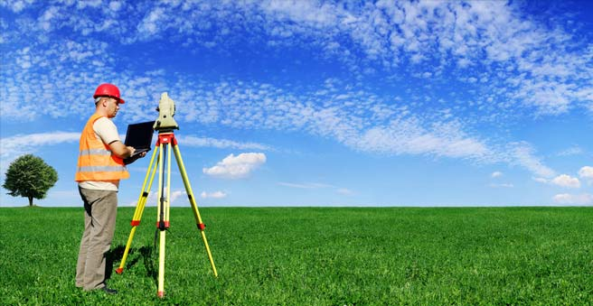

Infrastructure and Construction
We support major infrastructure and construction projects with precise geospatial data processing for:
- Highway and railway project surveys and design support
- Bridge and tunnel site characterization
- Urban development and master planning
- Site investigation and foundation analysis
- Earthworks volume calculation and monitoring
- Construction progress monitoring and as-built documentation

Ports and Coastal Engineering
Our hydrographic expertise serves the maritime and coastal development sector:
- Port and harbor design and expansion
- Navigation channel surveys and maintenance dredging
- Breakwater and coastal protection design support
- Seabed characterization and substrate mapping
- Shipping lane bathymetric surveys
- Coastal erosion monitoring and analysis
- Marine infrastructure project support

Survey and Mapping Companies
We partner with surveying and mapping firms to enhance their service offerings:
- Outsourced data processing and analysis services
- Raw survey data to final deliverables conversion
- Quality assurance and validation support
- Specialized processing services (LiDAR, photogrammetry, hydrographic)
- CAD drawing creation and coordination
- Report generation and documentation

Environmental and Marine Projects
Our geospatial solutions support environmental monitoring and marine research:
- Coastal and marine habitat mapping
- Environmental impact assessment surveys
- Wetland and intertidal zone analysis
- Water quality monitoring infrastructure
- Climate change impact studies
- Biodiversity and ecological surveys
- Long-term environmental monitoring programs